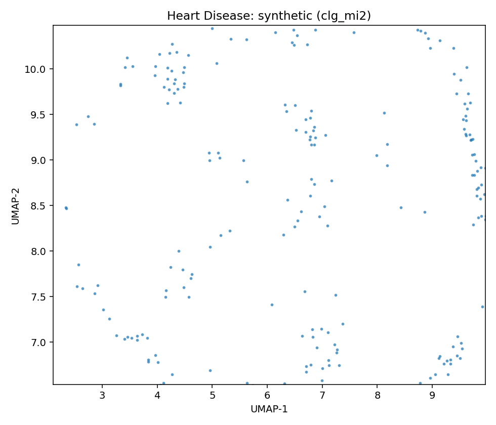

Data Report — Heart Disease
Source: UCI dataset 45
- Metadata file: metadata.json
- JSON-LD (schema.org/Dataset): dataset.json
- SemMap JSON-LD: dataset.semmap.json
- SemMap HTML: dataset.semmap.html
- Rows: 297
- Columns: 14
- Discrete: 7 | Continuous: 7
Dataset metadata
- Name: Heart Disease (UCI id 45)
Description
4 databases: Cleveland, Hungary, Switzerland, and the VA Long Beach
- Links:
- URL: https://archive.ics.uci.edu/dataset/45
Variables and summary
| variable | description | inferred | declared | type | dist |
|---|---|---|---|---|---|
| age | continuous | Integer | continuous | 54.5421 ± 9.0497 [29, 48, 56, 61, 77] | |
| sex | discrete | Categorical | discrete | 201 (67.68%) | |
| cp | discrete | Categorical | discrete | 4: 142 (47.81%) | |
| 3: 83 (27.95%) | |||||
| 2: 49 (16.50%) | |||||
| 1: 23 (7.74%) | |||||
| trestbps | resting blood pressure (on admission to the hospital) | continuous | Integer | continuous | 131.6936 ± 17.7628 [94, 120, 130, 140, 200] |
| chol | serum cholestoral | continuous | Integer | continuous | 247.3502 ± 51.9976 [126, 211, 243, 276, 564] |
| fbs | fasting blood sugar > 120 mg/dl | discrete | Categorical | discrete | 43 (14.48%) |
| restecg | discrete | Categorical | discrete | 0: 147 (49.49%) | |
| 2: 146 (49.16%) | |||||
| 1: 4 (1.35%) | |||||
| thalach | maximum heart rate achieved | continuous | Integer | continuous | 149.5993 ± 22.9416 [71, 133, 153, 166, 202] |
| exang | exercise induced angina | discrete | Categorical | discrete | 97 (32.66%) |
| oldpeak | ST depression induced by exercise relative to rest | continuous | Integer | continuous | 1.0556 ± 1.1661 [0, 0, 0.8, 1.6, 6.2] |
| slope | discrete | Categorical | discrete | 1: 139 (46.80%) | |
| 2: 137 (46.13%) | |||||
| 3: 21 (7.07%) | |||||
| ca | number of major vessels (0-3) colored by flourosopy | continuous | Integer | continuous | 0.6768 ± 0.9390 [0, 0, 0, 1, 3] |
| thal | continuous | Categorical | continuous | 4.7306 ± 1.9386 [3, 3, 3, 7, 7] | |
| num | diagnosis of heart disease | discrete | Integer | discrete | 0: 160 (53.87%) |
| 1: 54 (18.18%) | |||||
| 2: 35 (11.78%) | |||||
| 3: 35 (11.78%) | |||||
| 4: 13 (4.38%) |
Fidelity summary
| model | backend | disc_jsd_mean | disc_jsd_median | cont_ks_mean | cont_w1_mean |
|---|---|---|---|---|---|
| clg_mi2 | pybnesian | 0.1003 | 0.0995 | 0.2344 | 4.4109 |
| semi_mi5 | pybnesian | 0.1003 | 0.0995 | 0.2344 | 4.4109 |
| MetaSyn | metasyn | 0.1057 | 0.1057 | 0.2923 | 3.0578 |
Models
Model: clg_mi2 (pybnesian)
- Seed: 42
- Rows: 237
- Params:
{"max_indegree": 2, "operators": ["arcs"], "score": "bic", "type": "clg"} - Synthetic CSV: models/clg_mi2/synthetic.csv
- Per-variable metrics: models/clg_mi2/per_variable_metrics.csv
- Metrics JSON: models/clg_mi2/metrics.json
- UMAP: umap.png
{kind=link}
Model: semi_mi5 (pybnesian)
- Seed: 42
- Rows: 237
- Params:
{"max_indegree": 5, "operators": ["arcs"], "score": "bic", "type": "semiparametric"} - Synthetic CSV: models/semi_mi5/synthetic.csv
- Per-variable metrics: models/semi_mi5/per_variable_metrics.csv
- Metrics JSON: models/semi_mi5/metrics.json
- UMAP: umap.png MetaSyn GMF: metasyn_gmf.json
MetaSyn serialization
- Synthetic sample (SemMap Parquet): synthetic_metasyn.semmap.parquet
UMAP overview (same projection)
| Real (sample) | MetaSyn (synthetic) | pybnesian: clg_mi2 | pybnesian: semi_mi5 |
|---|---|---|---|
 |
 |
 |  |